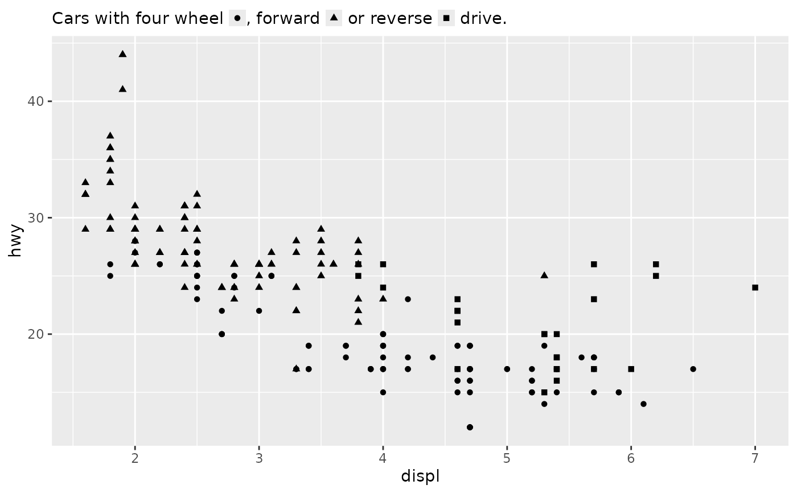
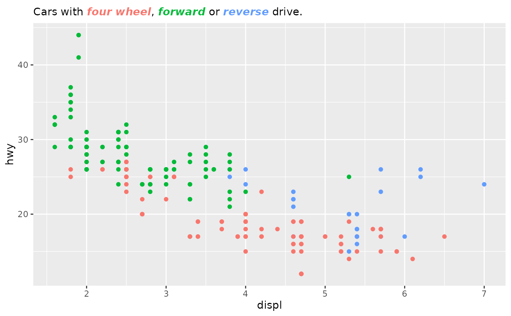
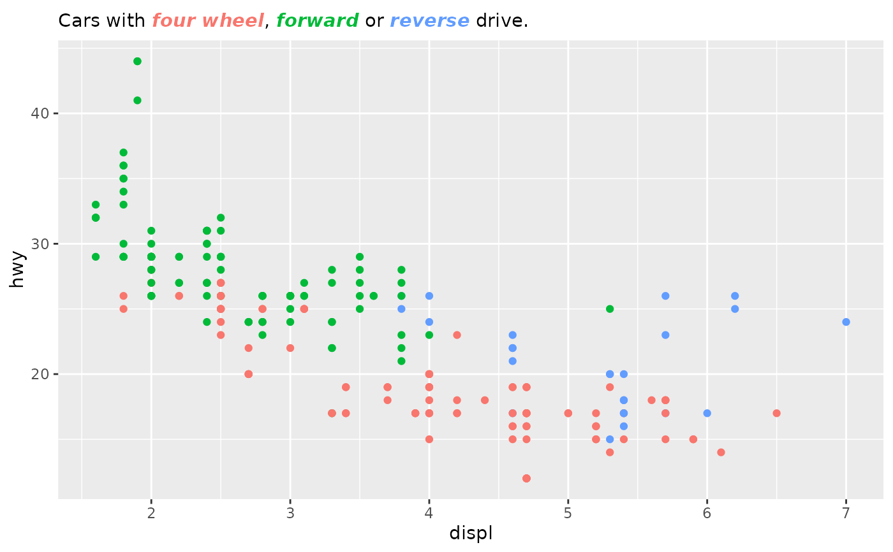
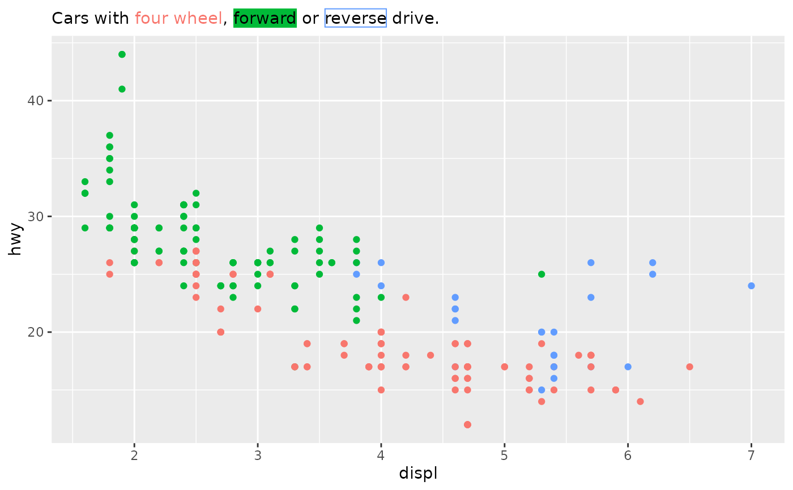
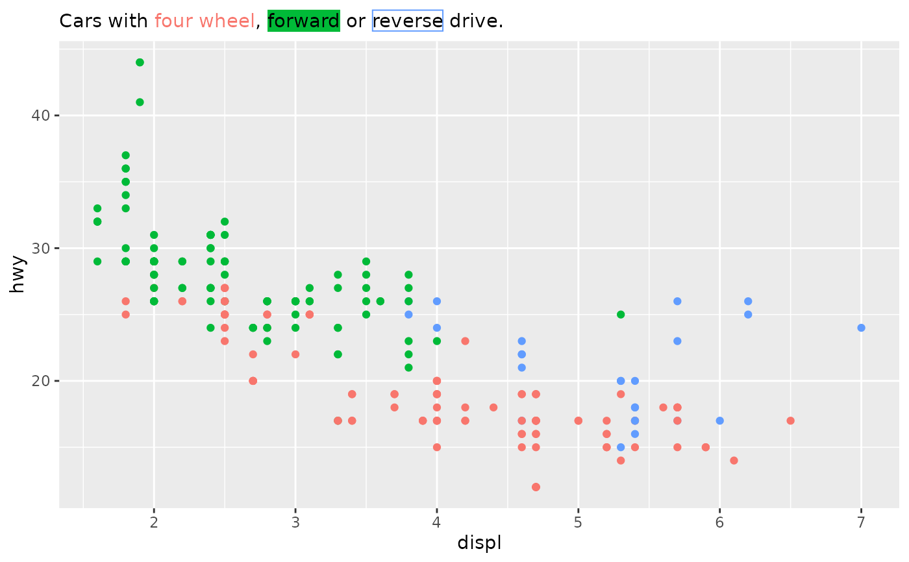

This legend appears similar to a subtitle and uses marquee syntax to typeset the text and interpolate legend glyphs.
Arguments
- title
A single character string indicating the text to display. If
NULLthe title is not shown. Ifwaiver()(default), the name of the scale or the name specified inlabs()is used for the tyle.- style
Either a style_set to override style sets inherited from the theme, or a style for styling the labels specifically. For
colourorfillscales, thecolor,backgroundandborderstyle properties are overridden when set asNULL, see examples.- detect
Either
FALSEto typeset entirely through syntax orTRUEto automatically detect labels and apply.- theme
A
themeobject to style the guide individually or differently from the plot's theme settings. Thethemeargument in the guide overrides, and is combined with, the plot's theme.- position
A character string indicating where the legend should be placed relative to the plot panels.
- override.aes
A list specifying aesthetic parameters of the legend keys. See details and examples in
?guide_legend.- order
positive integer less than 99 that specifies the order of this guide among multiple guides. This controls the order in which multiple guides are displayed, not the contents of the guide itself. If 0 (default), the order is determined by a secret algorithm.
Value
A GuideMarquee object that can be passed to the
guides() function or used as the guide argument in
a scale.
Text formatting
In addition to standard marquee syntax, there is
additional syntax to make building a guide easier. In the text below, n
marks the n-th break in the scale, label represents any of the scale's
labels and foo represents arbitrary text.
<<n>>or<<label>>can be used to insert key glyphs into the text.orcan also be used to insert key glyphs into the text.{.n foo}or{.label foo}applies thestyleargument tofoo, including recoloring when the guide represents acolourorfillscale.!!nor!!labeltranslates to{.label label}to insert the label verbatim with the application of thestyleargument.
Examples
library(ggplot2)
# A standard plot
base <- ggplot(mpg, aes(displ, hwy)) +
geom_point()
# Using key glyphs
base + aes(shape = drv) +
scale_shape_discrete(
# Same as using <<1>>, <<2>> and <<3>>,
# or ,  and 
# or ,  and 
name = "Cars with four wheel <<4>>, forward <<f>> or reverse <<r>> drive.",
guide = "marquee"
)

# Recolouring text
base <- base +
aes(colour = drv) +
labs(
colour = "Cars with {.4 four wheel}, {.f forward} or {.r reverse} drive."
)
base + guides(colour = "marquee")
 # Adjust display of labels
st <- style(weight = "bold", italic = TRUE, background = NA)
base + guides(colour = guide_marquee(style = st))

# Using background instead of text colour by setting it to NULL
st <- style(color = "black", background = NULL)
base + guides(colour = guide_marquee(style = st))
# Adjust display of labels
st <- style(weight = "bold", italic = TRUE, background = NA)
base + guides(colour = guide_marquee(style = st))

# Using background instead of text colour by setting it to NULL
st <- style(color = "black", background = NULL)
base + guides(colour = guide_marquee(style = st))
 # Customising style of each label through style sets
# Note: tag names must be universal per `vctrs::vec_as_names` and
# prefixed with `lab_`.
st <- classic_style()
st <- modify_style(st, tag = "lab_f", background = NULL, color = "black")
st <- modify_style(st, tag = "lab_r", border_size = trbl(1),
color = "black", background = NA)
base + guides(colour = guide_marquee(style = st))
# Customising style of each label through style sets
# Note: tag names must be universal per `vctrs::vec_as_names` and
# prefixed with `lab_`.
st <- classic_style()
st <- modify_style(st, tag = "lab_f", background = NULL, color = "black")
st <- modify_style(st, tag = "lab_r", border_size = trbl(1),
color = "black", background = NA)
base + guides(colour = guide_marquee(style = st))
 # Alternatively:
base + guides(colour = "marquee") +
theme(plot.subtitle = element_marquee(style = st))

# Splicing in labels by number (!!2) or label (!!subcompact)
base + aes(colour = class) +
labs(colour = "Cars including !!2 and !!subcompact vehicles") +
guides(colour = "marquee")
# Alternatively:
base + guides(colour = "marquee") +
theme(plot.subtitle = element_marquee(style = st))

# Splicing in labels by number (!!2) or label (!!subcompact)
base + aes(colour = class) +
labs(colour = "Cars including !!2 and !!subcompact vehicles") +
guides(colour = "marquee")
 # Using automatic detection
base + aes(colour = class) +
labs(colour = "Cars including suv and minivan vehicles") +
guides(colour = guide_marquee(detect = TRUE))
# Using automatic detection
base + aes(colour = class) +
labs(colour = "Cars including suv and minivan vehicles") +
guides(colour = guide_marquee(detect = TRUE))